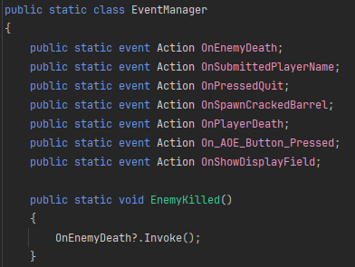
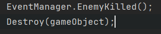
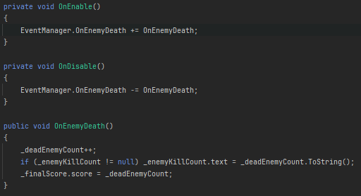

Calamity Chasm
Calamity Chasm is a third-person, over-shoulder-view casual shooter where you play as a demon named Kram, competing in a sporting coliseum surrounded by a pit that leads to the deeper parts of hell. Your objective is to survive as long as possible by shooting enemies with fireballs that knock them into the pit. The coliseum presents challenges with traps that can either hinder you or be used strategically against enemies. As you survive longer, the enemies become more numerous and aggressive. Your goal is to survive and eliminate as many enemies as possible to become the top demon in hell.
Check out the project here:
Calamity Chasm on itch.io
System Showcase
Gameplay Elements
UI
Event Driven Architecture
I implemented a custom event system based on the Observer Pattern using a static EventManager class. This class acted as a mediator between senders and listeners, enabling any system in the game to broadcast or respond to events without direct dependencies. Instead of relying on a singleton, I designed the EventManager using static methods and event delegates, making it globally accessible, lightweight, and easy to integrate.
Game objects such as traps, environmental hazards, and UI elements could subscribe to specific events, while gameplay systems like the player controller or Game Manager could invoke those events when necessary.
This architecture was crucial for rapid prototyping during our 2-month development window, and it supported the creation of modular, decoupled systems - perfectly suited for Calamity Chasm’s chaotic, trap-filled level design.
The static event manager provided a clean and scalable alternative to tightly coupled references or interfaces, making it easier to maintain and extend gameplay logic. It also simplified debugging and made it easy to tweak individual systems without affecting the entire game, since each component could be developed and tested independently.
Static mediator class
Event Sender
Event Listener
UI/UX
I created a custom Game Progression Bar inspired by Risk of Rain, using Shader Graph to dynamically visualize difficulty escalation. This bar updated in real-time and served as an ambient cue to signal when the game was about to ramp up in intensity. It was fully integrated with gameplay systems, adjusting based on player actions and game state changes.
All core UI components - such as AOE ability bar (Rage Gauge), timers, and menus were built from scratch in Unity using a modular system - each component was a prefab and variants made from that. I ensured all interfaces remained readable during chaotic gameplay by applying principles like visual hierarchy, contrast, and motion-based feedback. For instance, the Rage gauge would start animating a shaking motion when it's full to indicate it's ready. I also had a script to display the key/button UI icon to press based on which device the player is on.